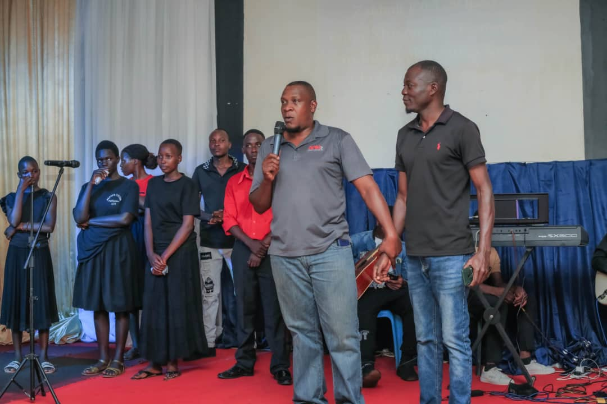
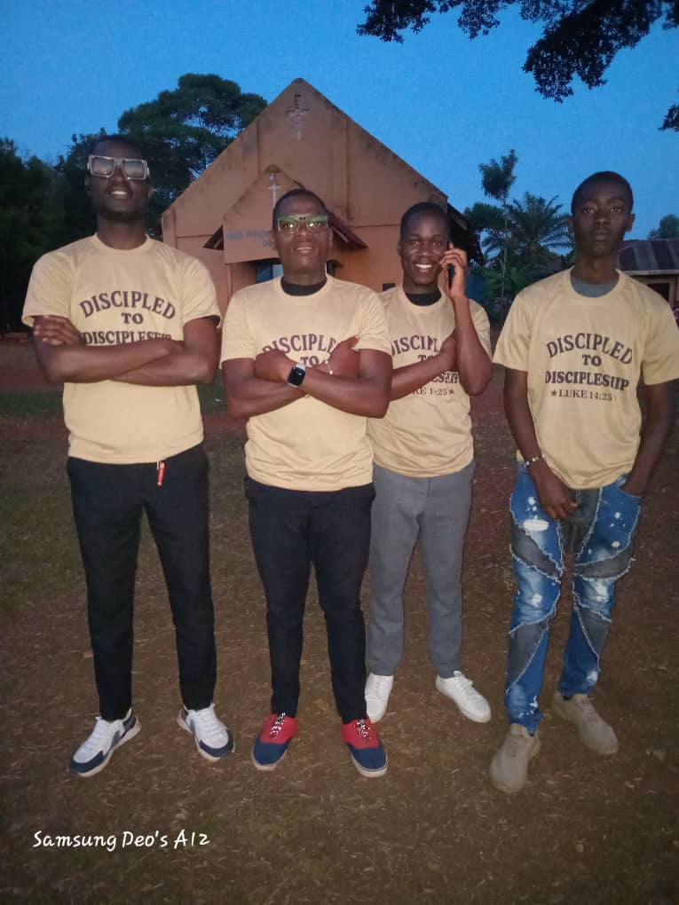

Senior Pastor
Pastor Daniel Isabirye
Lead pastor serving the Agape Community Church family in Wakitaka.
Meet the pastors serving Agape Community Church. Leadership at Agape is understood as service — helping people grow in Christ and helping the church live out its calling to love.

Lead pastor serving the Agape Community Church family in Wakitaka.

Serving alongside the wider pastoral and ministry team.
Serving the church through ministry, fellowship and discipleship.
Part of the pastoral team supporting the church family.
Serving with the Agape Community Church leadership family.
Matthew 20:26 points leadership toward service. We desire our pastoral ministry to reflect humility, care, biblical teaching and love for people.
Prayer, encouragement, teaching, fellowship and walking with people through different seasons of life are part of the church's ministry.
Ask for prayer →